AEC · 체성분 곡선을 이용한 만성질환 연구
▶ 실시간 모델 실험 앱 열기 (streamlit run code/app.py 실행 후) · HTN · DM · CKD · Gangnam 내부 / Sinchon 외부검증 · 최신 덱 기준 2026-10-06 (JangHoon Chun)
한눈에 보기
- 기본 정보(성별·나이·키·체중)에 AEC·체성분 FPCA 점수를 더하면 외부(Sinchon)에서 ΔAUC +0.02~+0.07 개선, 내부에서는 대부분 비유의 (261002, 구 코호트 1,260/1,123명 기준, 다중비교 보정 전).
- Landmark 단면 값은 VAT가 질환과 가장 뚜렷 (T11~L2 부근). 나이·성별·BMI 보정 후 두 코호트에서 일관된 것은 HTN의 VAT뿐 (DM은 Gangnam만, CKD는 둘 다 비유의).
- AEC는 raw 값에서는 약하지만 환자별 정규화(patient-wise) 후 HTN·DM에서 일관된 신호. 단, 외부 AUC 개선은 ≤0.023으로 작음. 스캐너 보정 후 CKD 신호는 대부분 사라짐.
- Landmark 지표를 더해도 AUC 개선은 대체로 노이즈 수준. MLP는 평균적으로 LR과 같고(개별 세트 차이 ≤|0.012|), 일부 세트에서만 소폭 차이.
1. 연구 설계
목적
- 기존 CT에서 얻는 AEC·체성분(VAT/SAT/TAMA)으로 HTN/DM/CKD를 얼마나 구분하는가
- 추가 비용·방사선 없는 opportunistic screening
방법
- 입력: 간~치골을 128구간 표준화한 AEC·체성분 곡선 (FPCA 압축) / 12개 landmark 단면
- 모델: 질환별 로지스틱 회귀, Gangnam 5-fold CV → Sinchon 외부검증
- 비교: DeLong, BH-FDR, 환자 단위 부트스트랩
| Variable | Gangnam | Sinchon |
|---|---|---|
| N (QC 후) | 1,436 | 1,129 |
| 여성 비율 | 61.4% | 48.7% |
| 나이 | 57.7 ± 12.6 | 59.6 ± 12.4 |
| BMI | 23.6 ± 3.2 | 23.5 ± 3.1 |
| HTN | 469 (32.7%) | 492 (43.6%) |
| DM | 291 (20.3%) | 338 (29.9%) |
| CKD | 135 (9.4%) | 171 (15.1%) |
두 코호트는 case-mix가 다름(유병률·성별). Gangnam·Sinchon은 단면 코호트.
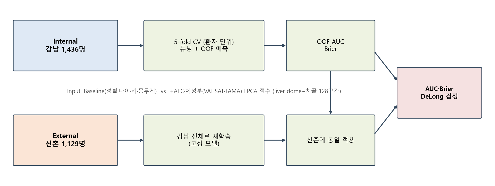
2. AEC·체성분 곡선(FPCA)의 AUC 기여
261002 세미나, 구 코호트 Gangnam 1,260 / Sinchon 1,123명 기준 (이후 덱은 QC 후 1,436 / 1,129명). 별표(*)는 다중비교 보정 전 DeLong p<0.05이며, 세미나 덱의 Bonferroni 기준(α≈0.017)으로는 HTN Internal(0.035)이 유의하지 않음.
| Disease | Cohort | Baseline AUC | +AEC+체성분 | ΔAUC | DeLong p |
|---|---|---|---|---|---|
| HTN | Internal | 0.795 | 0.809 | +0.015 | 0.035* |
| External | 0.718 | 0.741 | +0.023 | 0.011* | |
| DM | Internal | 0.714 | 0.735 | +0.022 | 0.078 |
| External | 0.665 | 0.706 | +0.041 | <0.001* | |
| CKD | Internal | 0.769 | 0.784 | +0.015 | 0.39 |
| External | 0.615 | 0.681 | +0.065 | <0.001* |
AEC 단독 (Gangnam OOF, 구 코호트: 양성 수 386/233/105)
| Disease | n(pos) | Baseline | +AEC | Δ | p |
|---|---|---|---|---|---|
| HTN | 386 | 0.795 | 0.804 | +0.009 | 0.050 (경계) |
| DM | 233 | 0.714 | 0.732 | +0.018 | 0.069 |
| CKD | 105 | 0.769 | 0.752 | −0.017 | 0.273 |
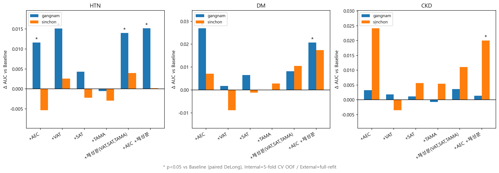
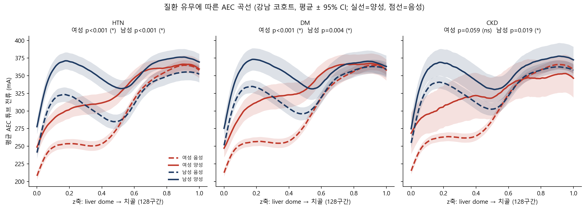
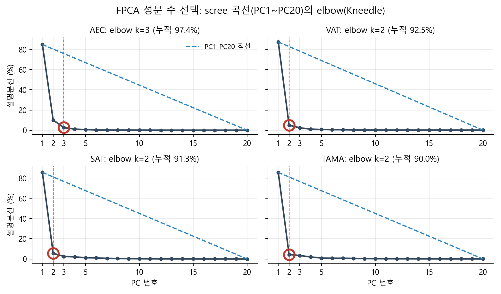
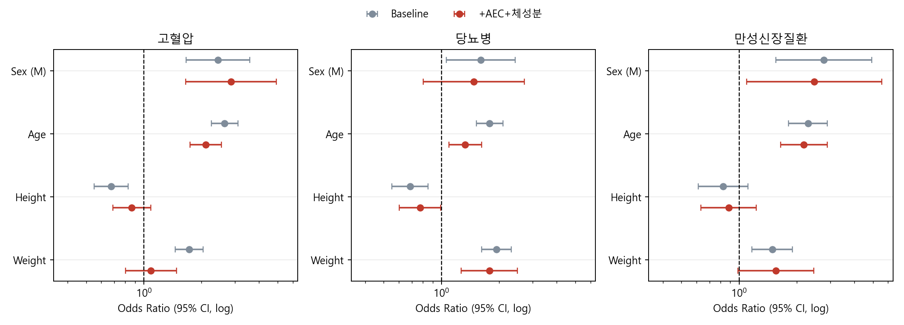
한계: 튜닝·평가에 같은 fold 사용(약간 낙관적), CKD는 양성 105명으로 EPV≈5.
3. Anchor(landmark) 단면 값의 AUC 기여
| Model | #Feat | HTN Int | HTN Ext | DM Int | DM Ext | CKD Int | CKD Ext |
|---|---|---|---|---|---|---|---|
| baseline (clinic4) | 4 | 0.731 | 0.700 | 0.671 | 0.690 | 0.856 | 0.621 |
| Model1 (+VAT 합) | 5 | 0.753 | 0.711 | 0.634 | 0.689 | 0.841 | 0.657 |
| +VAT @12 | 16 | 0.764 | 0.715 | 0.659 | 0.688 | 0.801 | 0.659 |
| +SAT @12 | 17 | 0.750 | 0.714 | 0.683 | 0.699 | 0.827 | 0.632 |
| +TAMA @12 | 17 | 0.752 | 0.710 | 0.647 | 0.676 | 0.871 | 0.628 |
| +VAT,SAT @12 | 28 | 0.763 | 0.716 | 0.703 | 0.701 | 0.857 | 0.671 |
| +VAT,SAT,TAMA @12 | 40 | 0.763 | 0.715 | 0.685 | 0.682 | 0.864 | 0.668 |
Int = Gangnam hold-out, Ext = Sinchon 외부. baseline = clinic4(성별·나이·키·체중 4개)로 이후 clinical(나이·성별·BMI)과 다름. 261003은 양성·음성 1:1 언더샘플링 + 7/1/2 hold-out 설계. DM·CKD의 내부 변동은 test 117·54명 노이즈. Model1(VAT 합)의 CKD 외부 향상(+0.036)은 FDR 보정 후 비유의.
- 두 코호트 모두 유의하고 방향이 같은 값 5개: DM의 SAT@femoral_head (0.70 / 0.67), TAMA@femoral_head (0.73 / 0.69), SAT@pubis, SAT@L4, CKD의 SAT@S1 (0.71 / 0.69). HTN은 없음.
- VAT 합: HTN 1.79 / 1.16(p=0.052), DM 1.50 / 1.12(p=0.126), CKD 1.19 / 1.35(Sinchon p<0.001).
- 보정 변수가 달라(키·체중 vs BMI) 아래 261006의 결과와 결론이 다를 수 있음 (261006: HTN VAT만 일관, CKD 비유의).
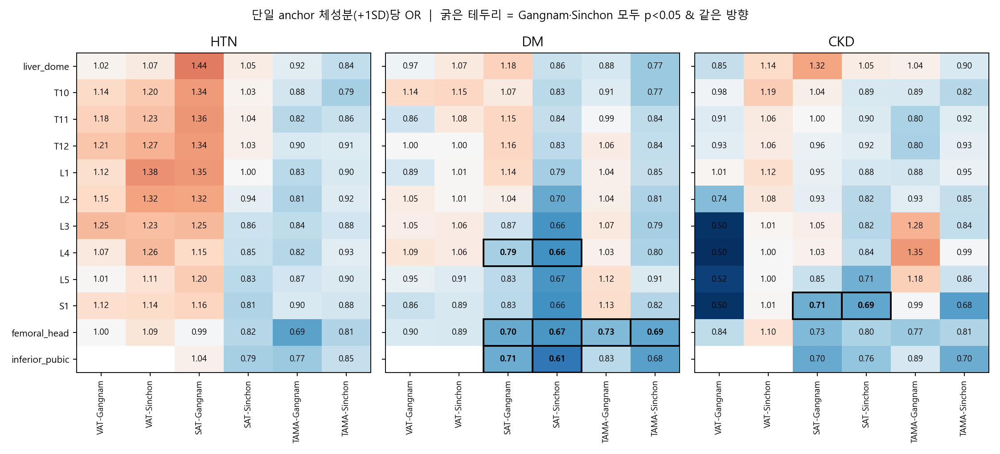
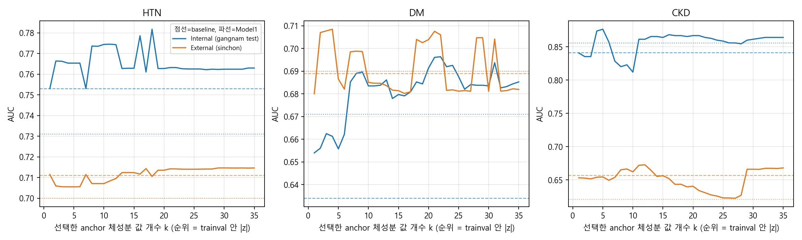
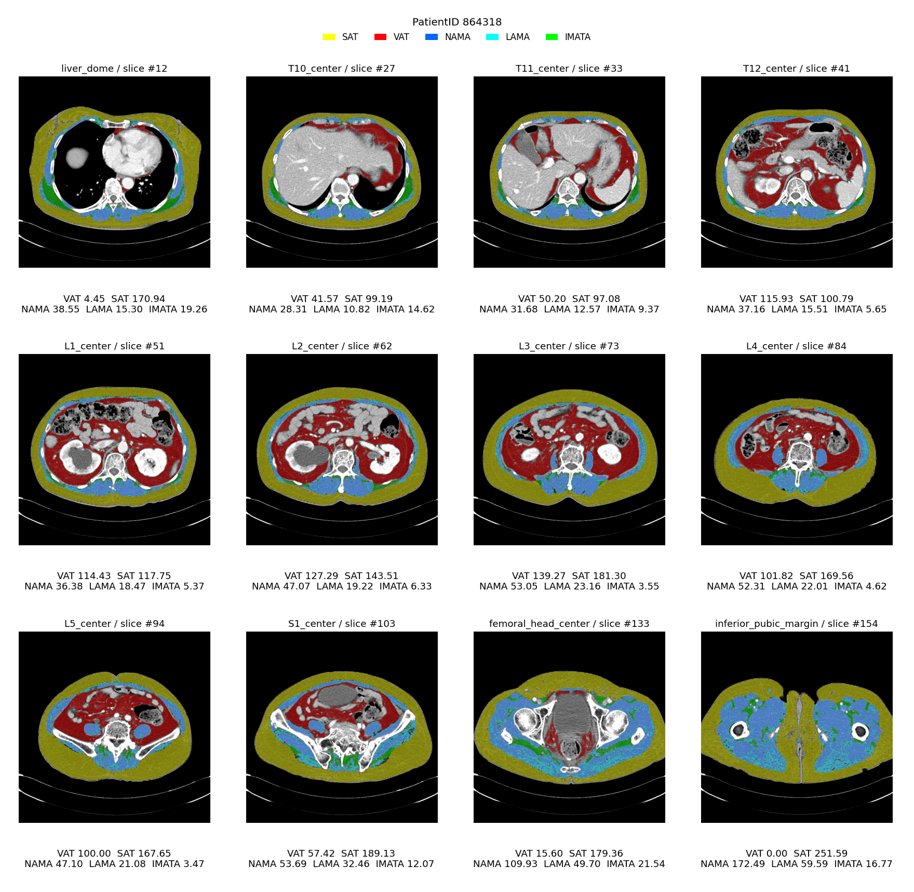
4. Landmark 단면의 질환 유무 차이 (261006)
미보정 Cohen d (* = FDR<0.05)
| Disease | Cohort | VAT@L1 | VAT@L3 | SAT@L3 | TAMA@L3 | AEC@L3 |
|---|---|---|---|---|---|---|
| HTN | Gangnam | 0.91* | 0.91* | 0.23* | 0.26* | 0.67* |
| Sinchon | 0.61* | 0.57* | 0.14* | 0.09 | 0.25* | |
| DM | Gangnam | 0.76* | 0.79* | 0.17* | 0.33* | 0.64* |
| Sinchon | 0.46* | 0.47* | −0.04 | 0.07 | 0.20* | |
| CKD | Gangnam | 0.75* | 0.61* | 0.02 | 0.45* | 0.54* |
| Sinchon | 0.41* | 0.37* | −0.01 | 0.07 | 0.11 |
나이·성별·BMI 보정 OR (+1SD)
| Disease | Cohort | VAT@L1 | VAT@L2 | VAT@L3 | SAT@L3 | TAMA@L3 | AEC@L3 |
|---|---|---|---|---|---|---|---|
| HTN | Gangnam | 1.69* | 1.74* | 1.77* | 1.46* | 0.89 | 1.46* |
| Sinchon | 1.39* | 1.35* | 1.29* | 0.93 | 0.95 | 1.05 | |
| DM | Gangnam | 1.39* | 1.49* | 1.48* | 0.99 | 1.11 | 1.34* |
| Sinchon | 1.09 | 1.09 | 1.12 | 0.69* | 0.80 | 1.02 | |
| CKD | Gangnam | 1.18 | 1.09 | 0.98 | 1.10 | 1.27 | 1.19 |
| Sinchon | 1.32 | 1.30 | 1.23 | 0.88 | 0.86 | 0.98 |
성별 층화 VAT@L2 OR (남성은 코호트 간 차이가 큼, * = FDR<0.05)
| Disease | Sex | Gangnam | Sinchon |
|---|---|---|---|
| HTN | M / F | 1.93* / 1.40* | 1.35 / 1.32 |
| DM | M / F | 1.47* / 1.43 | 1.05 / 1.23 |
| CKD | M / F | 1.12 / 1.12 | 1.20 / 1.58 |
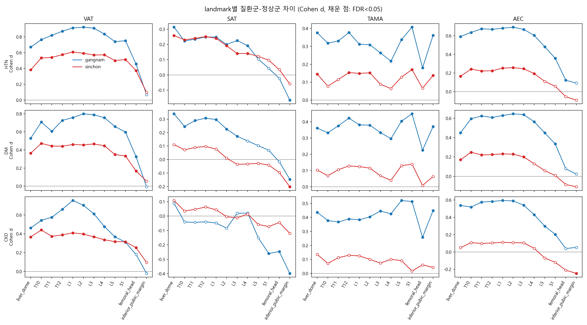
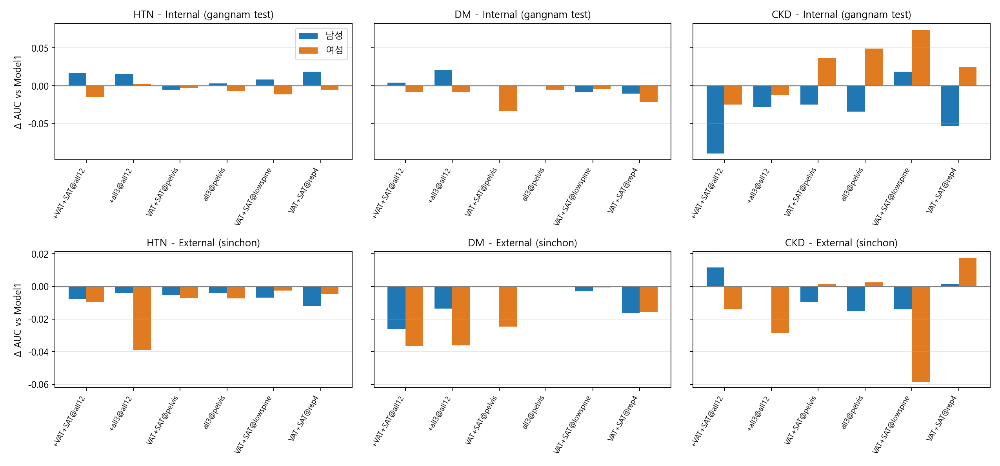
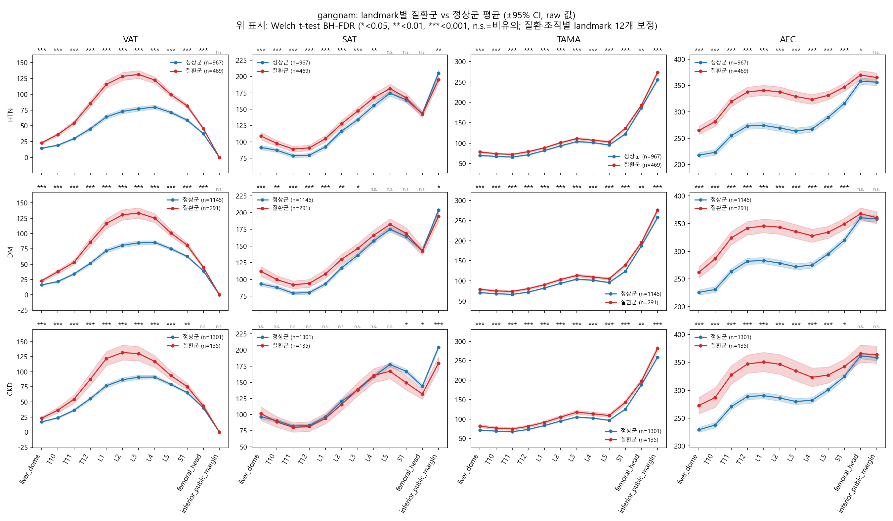
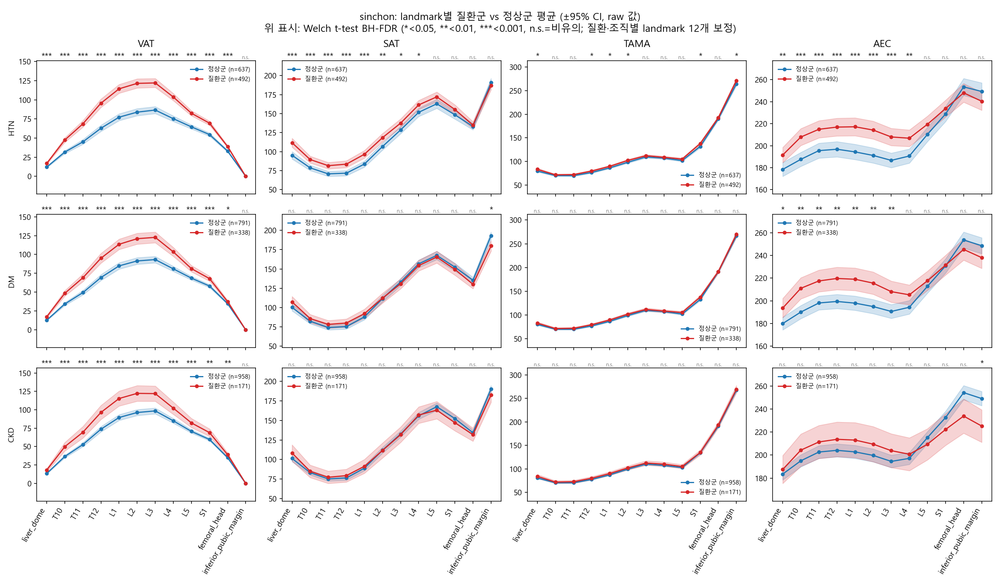
5. Patient-wise 정규화와 AEC 신호
일관된 위치 수 (128곳 중, 두 코호트 FDR<0.05 & 같은 방향, 일부 행만 표시)
| Measure | Disease | raw | pw_mean | pw_z | pw_minmax | pw_L3 |
|---|---|---|---|---|---|---|
| VAT | HTN | 84 | 13 | 13 | 0 | 0 |
| DM | 0 | 0 | 0 | 6 | 0 | |
| SAT | DM / CKD | 0 / 0 | 0 / 0 | 7 / 18 | 0 / 0 | 23 / 0 |
| TAMA | CKD | 0 | 4 | 6 | 0 | 0 |
| AEC | HTN | 0 | 111 | 63 | 69 | 61 |
| DM | 0 | 94 | 23 | 18 | 69 | |
| CKD | 0 | 47 | 25 | 27 | 0 |
AEC patient-wise 곡선 PC1 (+1SD OR, 보정 후)
| Disease | Gangnam | Gangnam +장비 | Sinchon | Sinchon +장비 |
|---|---|---|---|---|
| HTN | 0.61 (<0.001) | 0.61 (<0.001) | 0.72 (<0.001) | 0.74 (<0.001) |
| DM | 0.56 (<0.001) | 0.51 (<0.001) | 0.71 (<0.001) | 0.70 (<0.001) |
| CKD | 0.67 (0.005) | 0.80 (0.132) | 0.62 (<0.001) | 0.64 (<0.001) |
HTN·DM은 나이·성별·BMI·장비 보정 후에도 두 코호트 모두 유의. CKD는 Sinchon에서만(Gangnam은 장비 보정 후 p=0.132로 소실). OR<1의 부호는 PC1 방향이 임의라 해석에 주의. 위치별 FDR 기준에서는 장비 보정 후 CKD AEC 47→0, HTN pw_z 63→19로 크게 줄어듦.
스캐너 분포 (교란 점검)
| Cohort | Scanner | N | 여성 | HTN | DM | CKD |
|---|---|---|---|---|---|---|
| Gangnam | Ingenuity Core 128 | 242 | 45% | 35% | 21% | 7% |
| Revolution CT | 363 | 78% | 20% | 16% | 4% | |
| SOMATOM Definition AS+ | 258 | 54% | 45% | 28% | 19% | |
| Sensation 64 | 492 | 64% | 35% | 21% | 9% | |
| other | 81 | 47% | 32% | 10% | 14% | |
| Sinchon | SOMATOM Definition AS+ | 193 | 45% | 40% | 23% | 9% |
| SOMATOM Definition Flash | 259 | 46% | 42% | 34% | 17% | |
| SOMATOM Force | 170 | 47% | 48% | 32% | 19% | |
| iCT 256 | 295 | 56% | 40% | 30% | 13% | |
| other | 212 | 47% | 50% | 30% | 18% |
장비에 따라 질환 유병률이 달라 AEC 신호가 교란될 수 있음. 최다 장비 1종만 쓰면 일관된 위치가 대부분 0으로 감소(표본 감소 영향 포함). 예외: AEC DM의 pw_mean은 94→92곳, 최다 장비 1종에서도 52곳 유지.
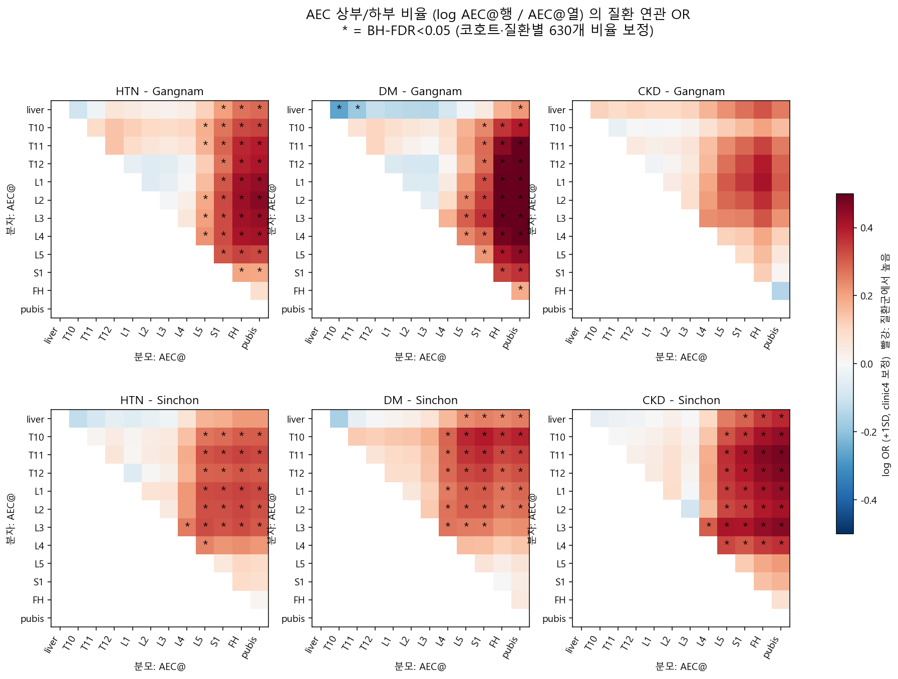
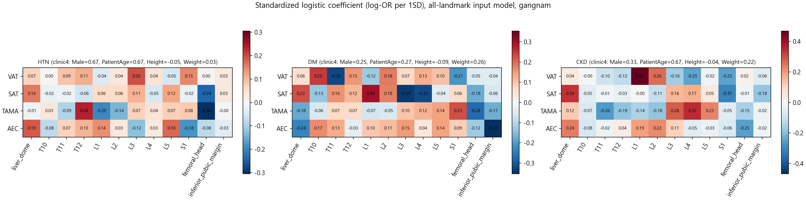
6. Landmark 조합 · 모델 비교
조합 세트 외부 AUC (Gangnam 학습 → Sinchon)
| Disease | Set | #Feat | CV AUC (G) | Ext AUC (S) | Δ vs clinical |
|---|---|---|---|---|---|
| HTN | clinical | 3 | 0.782 | 0.717 | - |
| VAT@L3 | 4 | 0.799 | 0.721 | +0.004 (p=0.525) | |
| Tier1 ratios@all | 36 | 0.791 | 0.727 | +0.010 (p=0.216) | |
| DM | clinical | 3 | 0.721 | 0.687 | - |
| VAT@L3 | 4 | 0.730 | 0.686 | −0.001 (p=0.904) | |
| Tier1 ratios@L3 | 6 | 0.727 | 0.704 | +0.017 (p=0.022) | |
| CKD | clinical | 3 | 0.766 | 0.616 | - |
| VAT@L3 | 4 | 0.765 | 0.615 | −0.001 (p=0.092) | |
| VAT,SAT,TAMA@all | 38 | 0.769 | 0.642 | +0.026 (p=0.074) |
MLP vs 로지스틱
- 전체 21개 세트 평균 외부 AUC 차이(MLP−LR) −0.001, 개별 차이 모두 |0.012| 이하. DM Tier1 ratios@L3(−0.012, p<0.001)·HTN clinical(+0.004, p=0.014)·CKD Tier1(+0.006, p=0.045)은 통계적으로 달랐지만 크기가 작아 모델 복잡도의 실질 이득은 없음
부분군 분석 (사전 지정)
- CKD S→G에서는 Tier1 ratios@L3 −0.034, VAT,SAT,TAMA@L3 −0.033으로 오히려 감소
- 성별·나이/BMI 3분위·성별×분위, 매칭 그룹 162개 중 두 방향 모두 CI가 0을 제외하고 부호가 같은 그룹은 0개
- 두 방향 ΔAUC 부호 일치 59%, 상관 0.12 → 큰 ΔAUC 그룹은 재현되지 않음
전체 feature 풀 전진 선택 (1,226개)
- 학습 코호트 CV로 최대 6개 선택, 다른 코호트 외부 평가 → 6개 중 clinical 대비 유의는 CKD S→G 1건뿐(그마저 AUC 감소 0.761→0.713). 최적 landmark 조합 탐색에서도 CKD S→G 값 조합은 0.761→0.702(p=0.01)로 악화
7. 선행연구와의 비교
| Study | 핵심 결과 | 본 연구와의 관계 |
|---|---|---|
| Framingham (n=3,001) | VAT가 SAT보다 HTN·DM·MetS와 강한 연관, 여성에서 더 강함 | VAT > SAT: 일치. '여성에서 더 강함'은 HTN Gangnam(남 1.93 > 여 1.40)과 달라 불일치 |
| Jackson Heart (n=2,477) | VAT 1SD당 OR 여성 HTN 1.62, DM 1.82 | 보정 OR HTN 1.3~1.8: 크기 유사 |
| Sci Rep 2026 한국 (n=14,105) | VAT↑ 시 CKD 위험↑, 여성 SAT는 역상관 | CKD VAT 방향 일치, 보정 후 비유의 |
| JCSM 2026 메타분석 (CKD) | CKD에서 당뇨는 근감소 위험↑, 높은 BMI는 보호 | TAMA는 매우 약함 (일부 구간 비율에서만 소수 위치): 간접 비교 |
| AEC | 질환 지표로 다룬 연구 못 찾음 | 탐색적, 체격·장비 교란 주의 |
8. 결론 · 다음 단계
결론
- VAT가 질환과 가장 뚜렷하며 보정 후 HTN에서만 두 코호트 일관.
- DM은 Gangnam에서만, CKD는 둘 다 비유의 → BMI 교란 또는 표본 수 한계. 병원 간 불일치가 커 통계적 유의성이 곧 임상적 유용성은 아님.
- AEC는 patient-wise 곡선(PC1)에서 HTN·DM 신호가 장비 보정 후에도 유지되지만 AUC 개선은 작음. CKD는 장비 보정 후 Gangnam에서 소실, 위치별 FDR 신호도 사라짐.
- SAT·TAMA·AEC 단면 값 단독은 약함. 일관된 신호는 SAT 조직 비율(VAT 비중이라 독립 정보 아님)과 AEC 구간 비율 위주이고, TAMA는 DM 5/65, CKD 1/65, 조직 비율 1/156으로 매우 약함.
한계
- 단면 코호트(longitudinal 아님), 튜닝·평가 fold 공유, CKD 양성 수 적음
- 스캐너·촬영 조건이 AEC와 얽힘(ComBat 등 보정은 radiomics 대상 문헌)
- AEC를 질환 지표로 해석하는 문헌 근거 없음 → 탐색적
자료 위치
| 자료 | 경로 |
|---|---|
| 최신 덱 (질환 차이) | docs/261006_landmark_disease_difference.pptx |
| Landmark AUC 덱 | docs/261003_landmark_VAT_AUC.pptx |
| 세미나 덱 | docs/261002_연구세미나발표자료.pptx |
| 논문 초안·구조 | docs/현재_논문/ |
| 결과 엑셀·그림 | outputs/clinic4/ (landmark/, figures/) |
| 분석 코드 | code/core · analysis · landmark · figures |
| 실시간 모델 실험 앱 | code/app.py (streamlit run code/app.py) |
이 페이지는 code/research.html이며 수치는 pptx 덱에서 옮긴 값입니다. 코호트 N은 덱마다 다릅니다(261002: 1,260/1,123, 이후: 1,436/1,129). 덱이 갱신되면 이 페이지도 수정이 필요합니다.